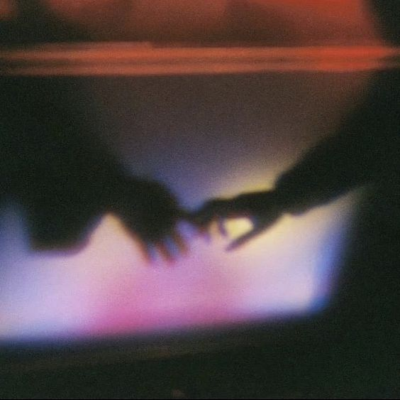
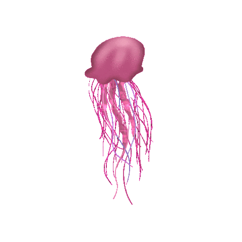

I wanna know how to break the loop
In a cycle of pain and suffering
Does it feel the same to you
Drifting in a sea of foursquares
I feel alone,
feel like I' m Robinson Crusoe.
Pain
Uncertainty
Constant Work
Pain
Uncertainty
Constant Work



Also known as: flower child, hippy
Written and fact-checked by The Editors of Encyclopaedia Britannica
Public gatherings—part music festivals, sometimes protests, often simply excuses for celebrations of life—were an important part of the hippie movement. The first “be-in,” called the Gathering of the Tribes, was held in San Francisco in 1967. It initiated the Summer of Love, wherein up to 100,000 members of the counterculture traveled across the United States and converged in the Haight-Ashbury district of that city. Many came for the Monterey International Pop Festival, but others were drawn to utopian promises of peace and love. The situation, however, eventually devolved into chaos. The district succumbed to overcrowding, crime (“free love” was often used to condone rape), and unsanitary conditions. In October 1967 a mock funeral, called the “Death of the Hippie” ceremony, was held by a few of those that remained in San Francisco.
Despite that symbolic end, the counterculture movement continued. Outdoor music festivals were another form of public gathering for hippies, with some 300 performances taking place in the United States between 1967 and 1971. The best-known festivals were held in 1969: Woodstock, a three-day event in rural New York state, and the free concert at Altamont Speedway near Livermore, California. The former drew an estimated 400,000-500,000 people and became virtually synonymous with the movement. That latter, however, was hastily planned and immediately turned unruly. The Hells Angels motorcycle gang, who had been hired to provide security, beat spectators and musicians. One club member, Alan Passaro, fatally stabbed a Black teenager, Meredith Hunter, during the Rolling Stones set.
The public gatherings of hippies did not always have calamitous ends. Indeed, many hippies participated in a number of teach-ins at colleges and universities in which opposition to the Vietnam War was explained, and they took part in antiwar protests and marches. They joined other protesters in the “moratorium”—a nationwide demonstration—against the war in 1969. Hippies were also involved in the development of the environmental movement. The first Earth Day was held in 1970, and many participated in teach-ins that educated listeners in the importance of environmental conservation.
Legacy By the mid-1970s the movement had waned, and by the 1980s hippies had given way to a new generation of young people who were intent on making careers for themselves in business and who came to be known as yuppies (young urban professionals). Nonetheless, hippies continued to have an influence on the wider culture, seen, for example, in more relaxed attitudes toward sex, in the new concern for the environment, and in a widespread lessening of formality. Their attire and a few of their practices entered mainstream culture, and the word hippie became a broad term for a person who superficially shares some of the same interests of hippie culture, such as eating a vegetarian diet or having an interest in Eastern cultures.Poolside convo about your summer last night (Ooh, yeah) About your summer last night Ain't give you no play, mm Could I make you shive last night? Could I make you shy on the last night? (Last night) Could we make it in? Do we have time?
I'll be the boyfriend in your wet dreams tonight Noses on a rail, little virgin wears the white You cut your hair, but you used to live a blonded life Wish I was there, wish we'd grown up on the same advice And our time was right
Keep a place for me, for me I'll sleep between y'all, it's nothing It's nothing, it's nothing Keep a place for me, for me
Now and then, you miss it, sounds make you cry Some nights, you dance with tears in your eyes I came to visit 'cause you see me like a UFO That's like never, 'cause I made you use your self-control And you made me lose my self-control, my self-control See upcoming R&B shows Get tickets for your favorite artists
Keep a place for me, for me I'll sleep between y'all, it's nothing Keep a place for me It's nothing, it's nothing It's nothing, it's nothing
Sometimes, you'll miss it And the sound will make you cry And some nights, you're dancing With tears in your eyes
I, I, I know you gotta leave, leave, leave Take down some summertime Give up, just tonight, 'night, 'night I, I, I know you got someone comin' You're spittin' game, know you got it I, I, I know you gotta leave, leave, leave Take down some summertime Give up, just tonight, 'night, 'night I, I, I know you got someone comin' You're spittin' game, know you got it (Yeah) I, I, I know you gotta leave, leave, leave Take down some summertime Give up, just tonight, 'night, 'night I, I, I know you got someone comin' You're spittin' game, know you got it
You got room in your phone for one more distraction Wonderful times Time is moving too slow for me to distract you I need to get back to you
All my friends, all my dawgs that I got back home We would look up at the sky, we was 10 years old I'm my brother's keeper, let these demons show Southern blood run deep so that genius grow From the trees I hang, so low way go Bands awake us from a slumber, yeah, dawg, I know These petty motherfuckers don't know 'bout Big Moe Rest in peace my nigga Luke, this a test of shit for sure My brother Chris put me on and I will never take that from him No matter how many times he called me "faggot" in the morning Best thing 'bout being Mormon was seeing the white boy storm And it's not my fault I like y'all, can't really explain it Became the hood's favorite, I'm not ever a main bitch My nigga, I'm just like SZA, they listen so I deliver They found out my name was Clifford, I hide it, sometimes I'm lying I'm tired of fucking crying and hiding behind a dummy, can I?
I feel better with you Telling you now, don't tell on the crew Bet your loot hot, they tell you to move Hollywood, I wish my brother would shoo Take me back to my other issue Was plastered with truth, feet on the roof Drug in my veins, they shot up the place My bro was an answer, then I was the glue I don't think that they will ever get through You see me standing there, heavyweight shoe Me and my bro ain't never gon' choose We on the loose, hands out the roof Hand me my dro, I hand you your bag All of my siblings end up like they dad I remember what them charges was like I don't want to be their burden tonight
The weight on my shoulders, I just can't get over He won't take me back and they don't know how hard They don't know how hard (They don't know how hard) They don't know how hard (They don't know how hard) They don't know how hard it is I feel like crumbling And I feel like crumbling And I feel like crumbling outside of your window